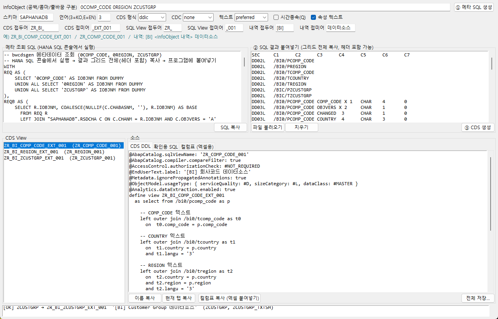

SAP BW → ABAP CDS → Datasphere
BWCDSGen
BW InfoObject 마스터데이터(속성 + 텍스트)를 평탄화한 ABAP CDS View를 자동으로 만들어 주는 Windows 프로그램입니다. 만들어진 CDS는 Datasphere Replication Flow 소스로 바로 쓸 수 있고, 데이터스피어 설계서용 컬럼표도 함께 나옵니다.
0COMP_CODE → COMP_CODE · COMP_CODE_TXTMD · COUNTRY · COUNTRY_TXTMD · REGION · REGION_TXTMD …

InfoObject 하나에 세 가지 결과물
CDS DDLZR_BI_COMP_CODE_EXT_001.asddls
ADT(Eclipse)에 붙여넣고 활성화. 추출 어노테이션 포함.
확인용 SQLZR_BI_COMP_CODE_EXT_001.sql
CDS를 만들기 전에 HANA에서 같은 조인 결과를 먼저 확인.
설계서 컬럼표ZR_BI_COMP_CODE_EXT_001_columns.csv
Datasphere 기준 타입. 엑셀에 바로 붙여넣기.
CDS DDL (0COMP_CODE)
@AbapCatalog.sqlViewName: 'ZR_COMP_CODE_001'
@AbapCatalog.compiler.compareFilter: true
@AccessControl.authorizationCheck: #NOT_REQUIRED
@EndUserText.label: '[BI] 회사코드 데이터소스'
@Analytics.dataExtraction.enabled: true
define view ZR_BI_COMP_CODE_EXT_001
as select from /bi0/pcomp_code as p
left outer join /bi0/tcomp_code as t0
on t0.comp_code = p.comp_code
left outer join /bi0/tregion as t2
on t2.country = p.country
and t2.region = p.region
and t2.langu = '3'
{
key p.comp_code as COMP_CODE,
t0.txtmd as COMP_CODE_TXTMD,
p.region as REGION,
t2.txtmd as REGION_TXTMD
}
where p.objvers = 'A'
설계서 컬럼표
| column_name | column_label | data_type | spec | length | precision | scale | is_key | is_not_null |
|---|---|---|---|---|---|---|---|---|
| COMP_CODE | 회사코드 | String | 4 | Y | Y | |||
| COMP_CODE_TXTMD | 회사코드 내역 | String | 40 | N | N | |||
| COUNTRY | 국가 | String | 3 | N | N | |||
| REGION | 지역(주/도) | String | 3 | N | N | |||
| REGION_TXTMD | 지역(주/도) 내역 | String | 40 | N | N |
사용 순서
- zip을 풀고 BWCDSGen.exe 실행. Python이나 DB 드라이버는 필요 없습니다.
- InfoObject 입력(예: 0COMP_CODE 0REGION) → ① 메타 SQL 생성. SQL이 클립보드에 복사됩니다.
- HANA SQL 콘솔(HANA Studio, DBeaver, DBACOCKPIT)에서 실행하고 결과 그리드 전체를 복사해 ② 붙여넣기 칸에 넣습니다.
- ③ CDS 생성 → 목록에서 CDS 선택 → 소스 복사 → ADT에서 Data Definition으로 붙여넣고 활성화. 설계서용은 컬럼표 복사로 엑셀에 붙여넣기.
- Datasphere에서 Replication Flow 생성 → 소스: BW ABAP 연결의 CDS → 대상: HDLF 스페이스 Local Table (File), Load Type은 Initial Only.
기본 규칙
| CDS View 이름 | ZR_BI_<InfoObject>_EXT_001 (30자) |
| sqlViewName | ZR_<InfoObject>_001 (16자, 넘치면 잘리고 경고) |
| 내역 (label) | [BI] <InfoObject 내역> 데이터소스 |
| CDS 형식 | ddic (define view + sqlViewName). entity로 변경 가능 |
| 델타(CDC) | 없음, 전체 적재. 대용량 마스터만 mapping / auto 선택 |
| 스키마 · 언어 | SAPHANADB · 한국어(3) |
처음 실행 시 경고가 뜰 수 있습니다. 코드 서명이 없는 exe라 Windows SmartScreen에서 “추가 정보 → 실행”을 눌러야 합니다. 사내 보안 프로그램이 막으면 아래 SHA-256 값으로 예외 등록을 요청하세요.
v1.7 SHA-256 · 88498B878EA7EA43E93DFFBEE385B1F1996BA74F4D0B7BE283BBB301F5789224
메타 SQL은 버전에 따라 가져오는 항목이 다릅니다. 프로그램을 업데이트했다면 메타 SQL을 새로 만들어 실행하세요.
버전 기록
- v1.7컬럼표 is_key · is_not_null을 Y/N으로, spec은 빈 칸
- v1.6데이터스피어 설계서용 컬럼표 추가 (엑셀 붙여넣기 / CSV)
- v1.5CDS 내역을 [BI] <InfoObject 내역> 데이터소스로
- v1.4스키마 기본값 SAPHANADB
- v1.3ddic 기본, ZR_BI_…_EXT_001 / ZR_…_001 이름 규칙
- v1.1델타 없음(전체 적재)을 기본으로
- v1.0첫 배포: 메타 SQL → 붙여넣기 → CDS 생성